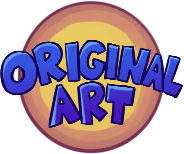
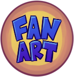
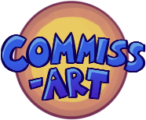

What is RSS?
RSS is a way to keep track of what gets posted to a website. Right now this website uses the RSS feed from my Art Tumblr.
A few ways you can follow this (or any RSS feed):
* Feedrabbit (This will email updates to you)
* FreshRSS (A website where you can see all the feeds you follow)
* MonitoRSS (A Discord bot that posts to your server)
* DISrssCORD (A python script that uses a Discord webhook to post to a server)
 What is RSS?
What is RSS?
(Comments aren't loaded yet)
All artwork on this site
is made by Jade Brochard ("Evil Sonic"), unless otherwise stated.